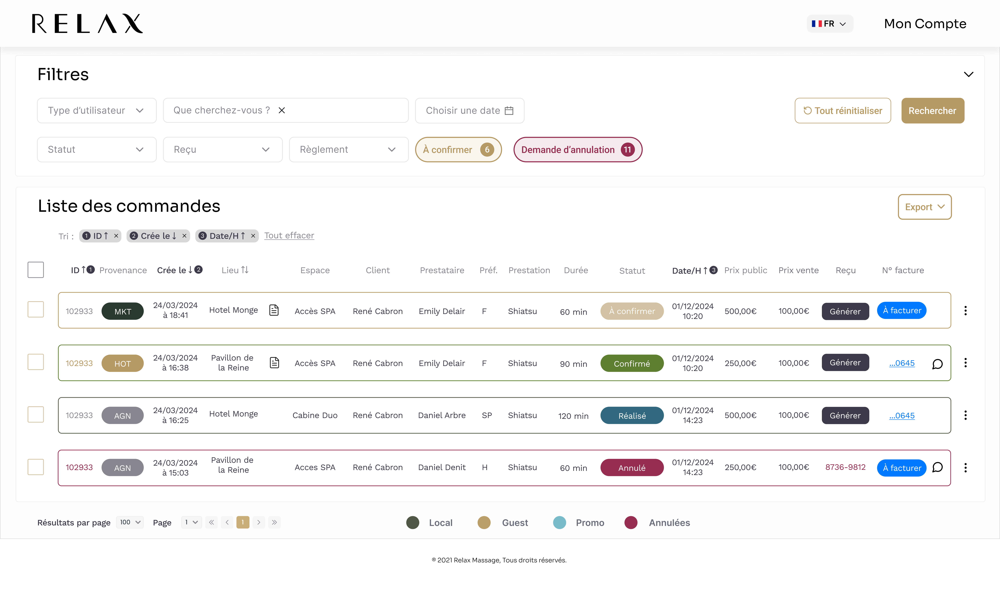
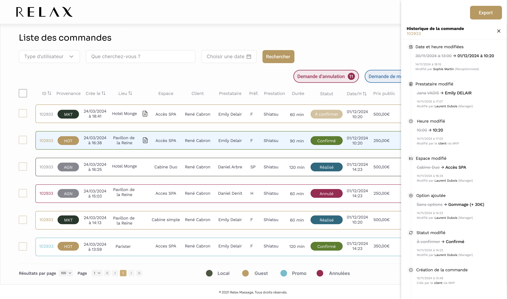
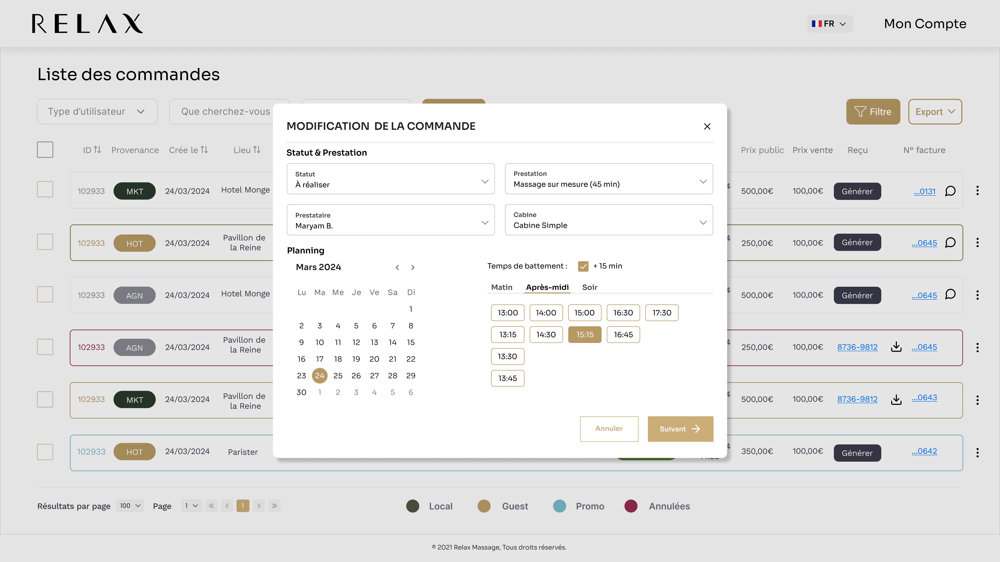
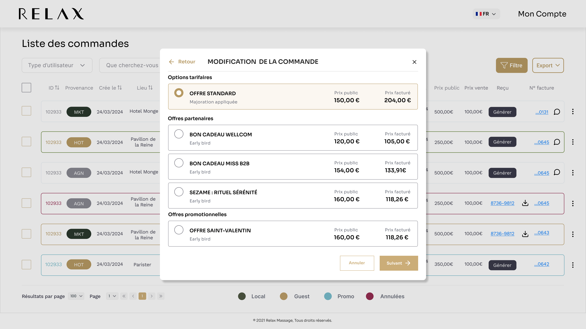

Réalisation
Les écrans en détail
Tri multi-critères
Les badges numérotés montrent l'ordre de priorité des critères de tri appliqués (ID, Date de création, Date/Heure).

Historique de commande
Chaque modification est tracée avec la valeur avant/après, la date, l'heure et l'auteur du changement.

Modification de commande - Étape 1
Statut, prestation, prestataire, cabine et planning avec sélection de créneau horaire.

Modification de commande - Étape 2
Choix des options tarifaires : offre standard, offres partenaires et offres promotionnelles.

Version mobile - Sélection multiple
Cartes empilées avec toutes les informations essentielles, sélection multiple et barre d'action fixe en bas d'écran.